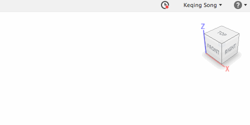

Connecting...
Additional content will appear here.
Looks like
you're offline.
Additional content will appear when you get back online.

Check your Internet connection or try switching Fusion 360 back to "Working Online".